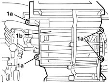
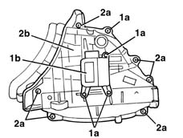

5040C18 RECIRCULATION AIR INTAKE ASSEMBLY - R.R. WITH AIR CONDITIONING CASING REMOVED
- Path
- Procedures > 50 AUXILIARY UNITS > 5040 AIR CONDITIONING CASING AND COMPONENTS > 5040C air conditioner box and components > 5040C18 RECIRCULATION AIR INTAKE ASSEMBLY - R.R. WITH AIR CONDITIONING CASING REMOVED
- Kind
- repair procedure (removal / refitting; the operation number is the code)
- Applies to
- all engines; all production periods
- Interactive page
- https://sloeber94.github.io/elrnDB-lYpsln/en/#/2429320
Applies to: all engines; all production periods
 Removing
Removing
 Refitting
RefittingDisconnect the electrical connection for the recirculation motor.
1. Undo the four bolts (1a) and remove the air intake assembly (1b).

Applies to: all engines; all production periods
1. Undo the bolts (1a) and remove the recirculation motor (1b).
2. If necessary, undo the seven bolts (2a), open the air intake assembly (2b) and keep the recirculation flap.

Applies to: all engines; all production periods
Refitting
RemovingCheck that the air intake assembly and the flap are not damaged.
If removed, position the flap inside the air intake assembly and tighten the seven bolts.
Check that the flap rotates freely and completes the entire travel.
Position the motor attaching the intake and fasten it using the bolts.
Position the air intake assembly on the air conditioning casing and fasten it using the four bolts.